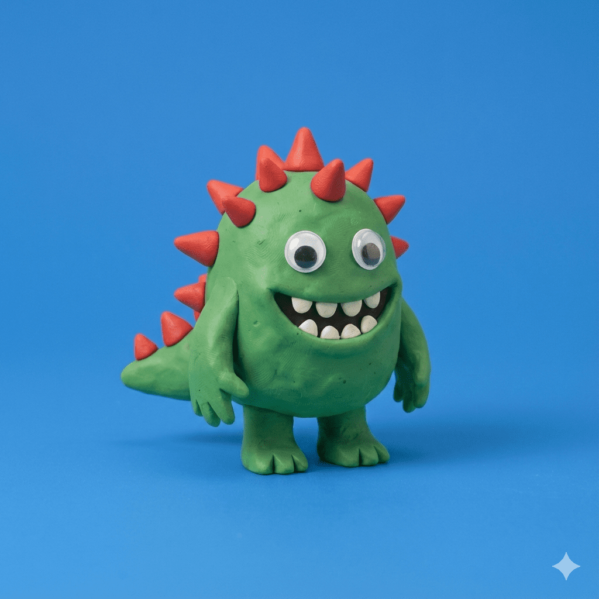

Despite the edgy name and actual spikes, Spike is actually a gentle nature-lover who spends his time singing lullabies to sleeping stars to ensure they have sweet dreams. He is widely considered the best listener in the universe, possessing a patient and thoughtful demeanor that makes him the perfect confidant.